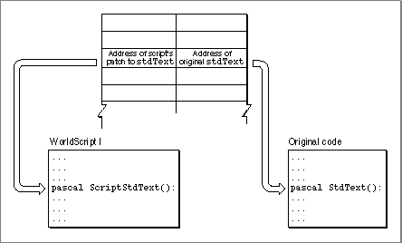

Modifying Script Systems
The fourth principal use for the Script Manager is in modifying the contents of script systems themselves. The routines described in this section are for specialized purposes, such as providing regional variants to existing script systems or assigning script-specific features to individual documents or applications. You can use these Script Manager routines toMost text-processing applications need not perform either of these replacements. However, if your program has special needs or if you are implementing a specific regional variation of a script system with unusual text-handling features, you can use these Script Manager calls.
- replace one or more of a script system's international resources (this replacement occurs within the context of your application only)
- replace one or more of an individual script system's routines (for 1-byte complex scripts only)
Replacing a Script System's Default International Resources
In certain situations, you may want to replace the script-system-supplied international resources with some of your own. For example, your application might create documents containing currency amounts and get the currency format from the numeric-format resource. You may then want the unit of currency to remain the same, even if the document is displayed on a Macintosh with system software localized for another region.You can store your own versions of some of the international resources in your application's or document's resource file, to override those in the System file. In this case, documents that your application creates could have their own copy of the numeric-format resource that was used to create them.
To replace the numeric-format (
'itl0') or long-date-format ('itl1') resource, follow these two steps:If your replacement resource is attached to your application or document, it will override the script system's default version. When a call for a resource is made, the Resource Manager searches first in the resource fork of the open document, then in the resource fork of the active application, and then in the System file. This search sequence is described in the chapter "Resource Manager" in Inside Macintosh: More Macintosh Toolbox.
- When your application starts up or when your document is opened, call the
GetScriptVariablefunction for your target script system to get the ID number of the current default version of the resource you are replacing. Save that ID number for later.- Call the
SetScriptVariablefunction to set the script's default ID number to the ID of the resource that you are supplying.To substitute the string-manipulation (
'itl2') or tokens ('itl4') resources, you must take an additional step. If you want to replace the default resource currently used by a script system, you must first clear your application's international resources cache. The cache is part of an application's context as handled by the Process Manager; it is initialized when the application is launched, and is switched in and out with the application. It contains the resource ID numbers of the default string-manipulation and tokens resources for all installed script systems. Once the cache is set up, access to string-manipulation and tokens resources is exclusively through the ID numbers in the cache.Therefore, to replace a string-manipulation or tokens resource, it is not enough to attach the resource to your document and call the
SetScriptVariablefunction; this alone does not affect any cached ID numbers. In addition, add this third step:In this case, when a call for a resource is made, the Script Manager looks first in the cache for the resource ID to use. If the cache has been cleared, the Script Manager gets the ID from the script variables (and updates the cache with the new ID). The Script Manager then calls the Resource Manager, requesting a resource with that ID. The Resource Manager searches for the resource as described previously, taking it from your document or application.
- After calling
SetScriptVariableas described in step 2, callClearIntlResourceCache. That will cause the cache to be reloaded with the current default resource ID numbers, including your override of the previous default, as each resource is called.Because the system maintains a separate international resources cache for each application's context, your application can provide its own string-manipulation and tokens resources without affecting the use of those resources by other applications or by the system. When the Process Manager switches in another application, that application's international resources cache has the defaults needed by that application.
No matter which international resource you have replaced, there is one final step to take:
- When your application exits or is switched out, be sure to call
SetScriptVariableonce again to reset the script system's default ID number to what it was before you replaced it.
- IMPORTANT
- If the international resources selection flag is
TRUEwhen a call to access your supplied resources is made, the ID numbers of your supplied resources must be within the system script range; if it isFALSE, the IDs must be in the range of the current script. Otherwise, your resources will not be found. See the appendix "International Resources" for a list of script codes and their resource ID ranges.
Replacing a Script System's Default Routines
Applications do not normally need to modify a script system's text-handling routines. For 1-byte complex script systems and for 2-byte script systems, most script-specific behavior is built into tables in the script's international resources. Text-handling code is in Macintosh system software: in ROM, in the System file, or in one of two system extensions--WorldScript I and WorldScript II. WorldScript I and WorldScript II handle text for 1-byte complex and 2-byte script systems, respectively. They are described in the appendix "Built-in Script Support" in this book. For most needs the table-driven behavior is adequate, and you can access many of the tables through the Script Manager calls described in the previous section.Even so, for 1-byte complex script systems, the Script Manager offers you the ability to modify or enhance the routines contained in WorldScript I. If you need specific script-based behavior that is not currently supported, you can replace one or more script utilities (low-level text-handling routines that employ the
_ScriptUtiltrap) or QuickDraw patches for your target script system. You can create a patch and install it with a System extension file (type'INIT') that is executed at system startup.In every script system that uses WorldScript I, the dispatch-table element for every script utility and QuickDraw patch consists of two pointers: one to the WorldScript I implementation of the routine and one to the original (built-in Roman) routine. In all cases, the WorldScript I routine executes first. In some cases, WorldScript I calls the original routine after its own; in other cases, the pointer to the original routine is
- IMPORTANT
- Because this capability affects WorldScript I only, it is available only for 1-byte complex script systems.
NILand the WorldScript I routine is all that executes. See Figure 6-6. This design allows you to place a patched routine so that it executes before, in place of, or after the WorldScript I routine.Figure 6-6 Dispatch table entry for script utilities and QuickDraw patches

The script-based dispatch table design gives you a simple, flexible way to replace individual routines without having to patch out all of_ScriptUtilor any of the QuickDraw low-level routines in their entirety. Furthermore, in a multiscript environment each patch applies only to its own script system. You can, for example, patchstdTextfor the Thai script system only, leaving it unchanged for all other script systems.To replace only the WorldScript I implementation of a routine, replace its pointer in the dispatch table; to keep the WorldScript I routine while replacing or patching the original routine, replace the original-routine pointer in the dispatch table. The four Script Manager routines that allow you to make those patches are
GetScriptUtilityAddress,SetScriptUtilityAddress,GetScriptQDPatchAddress, andSetScriptQDPatchAddress. Either pointer in the dispatch table may beNIL, meaning that WorldScript I either (1) doesn't patch the original routine or (2) doesn't call the original routine.For additional information on how to use these four Script Manager routines to customize a script's behavior, see the appendix "Built-in Script Support."